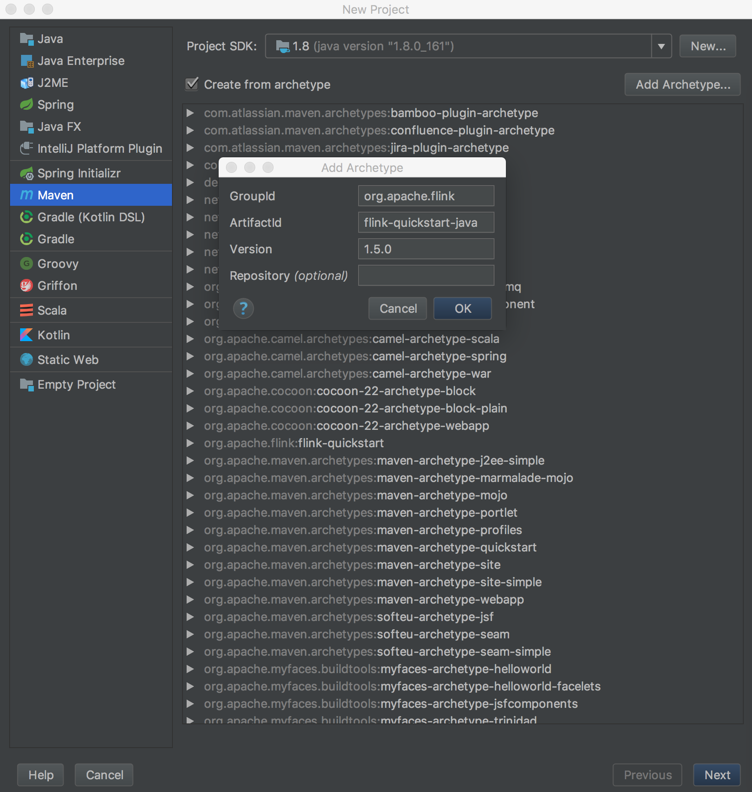
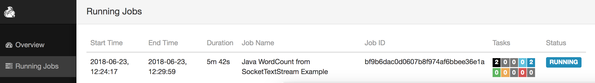

准备工作
安装查看java的版本号，推荐使用java8。
1
2
| $ java -version
java version "1.8.0_161"
|
安装Flink
在Mac OS X上安装Flink是非常方便的。推荐通过homebrew来安装。
1
2
3
4
| $ brew install apache-flink
...
$ flink --version
Version: 1.5.0, Commit ID: c61b108
|
启动Flink和进入web交互页面
Flink可以通过自带的脚本快速启动。首先通过brew来定位刚才安装的Flink的安装目录。
1
2
3
| $ brew info apache-flink
/usr/local/Cellar/apache-flink/1.5.0 (116 files, 324MB) *
Built from source on 2018-06-22 at 16:42:50
|
找到之后，进入”1.5.0”目录，然后执行启动脚本
1
| $ ./libexec/bin/start-cluster.sh
|
接着就可以进入web页面(http://localhost:8081/)
简单的示例
首先用IDEA创建一个maven工程。

创建一个SocketTextStreamWordCount文件，加入以下代码。
1
2
3
4
5
6
7
8
9
10
11
12
13
14
15
16
17
18
19
20
21
22
23
24
25
26
27
28
29
30
31
32
33
34
35
36
37
38
39
40
41
42
43
| public class SocketTextStreamWordCount {
public static void main(String[] args) throws Exception {
if (args.length != 2) {
System.err.println("USAGE:\nSocketTextStreamWordCount <hostname> <port>");
return;
}
String hostName = args[0];
Integer port = Integer.parseInt(args[1]);
final StreamExecutionEnvironment env = StreamExecutionEnvironment.getExecutionEnvironment();
DataStream<String> text = env.socketTextStream(hostName, port);
DataStream<Tuple2<String, Integer>> counts = text.flatMap(new LineSplitter())
.keyBy(0)
.sum(1);
counts.print();
env.execute("Java WordCount from SocketTextStream Example");
}
public static final class LineSplitter implements FlatMapFunction<String, Tuple2<String, Integer>> {
@Override
public void flatMap(String s, Collector<Tuple2<String, Integer>> collector) {
String[] tokens = s.toLowerCase().split("\\W+");
for (String token: tokens) {
if (token.length() > 0) {
collector.collect(new Tuple2<String, Integer>(token, 1));
}
}
}
}
}
|
接着进入工程目录，使用以下命令打包。
1
| $ maven clean package -Dmaven.test.skip=true
|
然后我们开启监听9000端口。
最后进入flink安装目录执行以下命令跑程序。
1
| $ /bin/flink run -c org.myorg.quickstart.SocketTextStreamWordCount /your/path/target/original-flink-quickstart-java-1.0-SNAPSHOT.jar 127.0.0.1 9000
|
执行完上述命令后，我们可以在webUI中看到正在运行的程序。

我们可以在nc中输入text，比如
1
2
3
4
| $ nc -l 9000
hello hello hello
hehe
your world
|
然后我们通过tail命令看一下输出的log文件，来观察统计结果。进入flink目录，执行以下命令。
1
2
3
4
5
6
7
| tail -f ./libexec/log/flink-*-taskexecutor-1-localhost.out
(hello,1)
(hello,2)
(hello,3)
(hehe,1)
(your,1)
(world,1)
|
总结
本文描述了如何在Mac电脑上安装flink，及运行它。接着通过一个简单的flink程序来介绍如何构建及运行flink程序。
参考
Setting up Apache Flink on Mac OS X
Apache Flink 中文文档